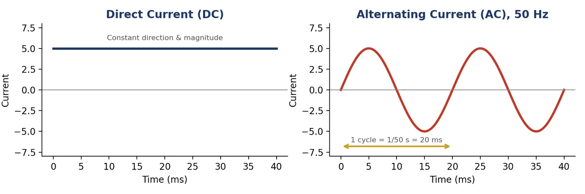
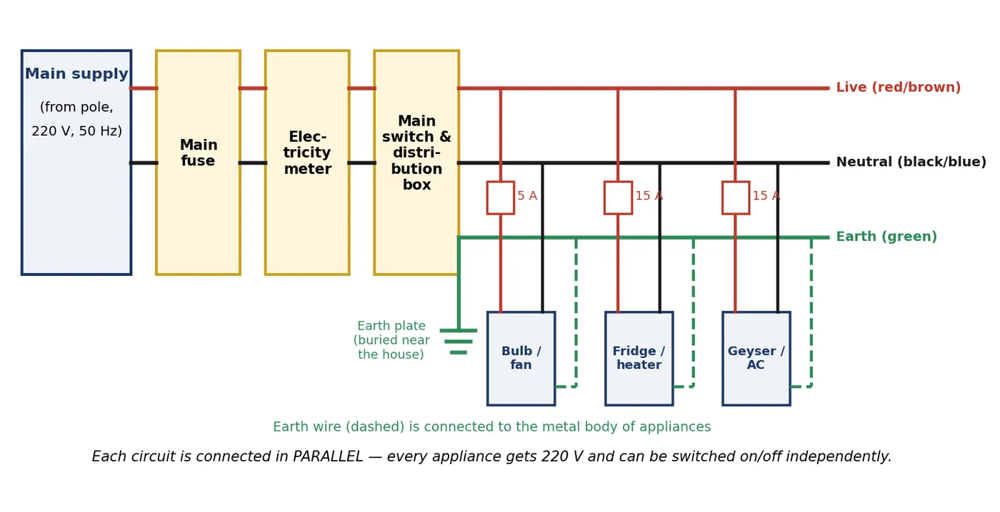

Electric current: quick recap
Electric current is the rate of flow of electric charge through a conductor. Its SI unit is the ampere (A).
Depending on how the current flows with time, it is of two types: Direct Current (DC) and Alternating Current (AC).
Direct Current (DC)
A current that flows in one direction only and whose magnitude usually stays constant is called direct current (DC).
🔋 Sources of DC
- Electric cells and batteries (dry cell, torch cell, car battery)
- Solar cells
- DC generator (dynamo)
📱 Uses of DC
- Charging mobile phones, laptops and inverter batteries
- Torches, remote controls, wall clocks
- Electroplating and electrolysis (need a fixed direction of current)
Alternating Current (AC)
A current that reverses its direction periodically (after equal intervals of time) is called alternating current (AC). Its magnitude also changes continuously, rising from zero to maximum and falling back.
Sources of AC
- AC generator (works on electromagnetic induction)
- Power stations (thermal, hydro, nuclear) all produce AC
⚡ Key facts about AC in India
- Frequency = 50 Hz: AC completes 50 cycles every second.
- Time for one cycle = 1/50 s = 0.02 s.
- In one cycle the direction reverses twice, so the current changes direction every 1/100 s (100 times per second).
- Household supply voltage = 220 V. (USA uses 110–120 V at 60 Hz.)

Difference between AC and DC
| Basis | Alternating Current (AC) | Direct Current (DC) |
|---|---|---|
| Direction | Reverses periodically | Always in one direction |
| Magnitude | Changes continuously with time | Generally constant |
| Frequency | 50 Hz in India | Zero |
| Source | AC generator, power stations | Cells, batteries, DC generator |
| Transmission | Can be sent over long distances with less energy loss | Large energy loss over long distances |
| Voltage change | Easily stepped up/down by a transformer | Cannot be changed by a transformer |
| Storage | Cannot be stored in a battery | Can be stored in a battery |
| Graph | Wave (sine curve) | Straight line parallel to time axis |
💡 Why is AC preferred for supply to homes?
The main advantage of AC over DC is that AC can be transmitted over long distances without much loss of energy. Its voltage can be raised with a step-up transformer at the power station (so current and heating losses in the wires are low) and lowered again with a step-down transformer near our homes.
Domestic (household) electric circuits
Electricity reaches our homes from the pole or underground cable through the mains supply at 220 V AC, 50 Hz. A household circuit uses three wires:
| Wire | Old colour | New (IEC) colour | Potential / Role |
|---|---|---|---|
| Live (positive) | Red | Brown | At 220 V; carries current into the appliance |
| Neutral (negative) | Black | Light blue | At 0 V; completes the circuit (return path) |
| Earth | Green | Green-yellow | Connected to a metal plate buried deep in the earth; safety wire |
The potential difference between the live and neutral wire in India is 220 V.
Path of current in the house
- Main fuse: installed by the electricity board at the entry point; protects the whole house.
- Electricity meter: records the electrical energy consumed in kilowatt-hour (kWh or “units”).
- Main switch and distribution box: the supply is divided into separate circuits for different rooms, each with its own fuse or MCB.
Two separate circuits are used
| Circuit | Current rating | Appliances |
|---|---|---|
| Low-power circuit | 5 A | Bulbs, tube lights, fans |
| High-power circuit | 15 A | Geyser, room heater, electric iron, AC, refrigerator, washing machine |

🤔 Why are appliances connected in parallel?
- Each appliance gets the same voltage (220 V).
- Each appliance can be switched ON/OFF independently using its own switch.
- If one appliance fails or is switched off, the others keep working.
- Total resistance is less, so each appliance draws the current it needs.
Earthing (earth wire)
Appliances with a metallic body (electric iron, toaster, refrigerator, geyser, washing machine) are connected to the earth wire. It is joined to a metal plate buried deep in the ground near the house.
🛡️ Purpose of earthing
If the live wire accidentally touches the metal body due to faulty insulation (leakage of current), the earth wire provides a low-resistance path for the current to flow into the earth.
This keeps the potential of the metal body equal to that of the earth (zero), so the user does not get a severe electric shock.
Faults in household circuits
(a) Short circuit
A short circuit occurs when the live wire and neutral wire come in direct contact, usually because the insulation is damaged or the appliance is faulty. The resistance of the circuit becomes almost zero, so a very large current flows (I = V/R). This produces excessive heat and can cause sparks and fire.
(b) Overloading
Overloading occurs when too many appliances are connected to a single socket, or the supply voltage rises accidentally. The total current drawn exceeds the safe limit of the wires, which overheat and can catch fire.
🧠 Remember
- Short circuit → live and neutral touch → resistance ≈ 0 → current becomes very high.
- Overloading → too many appliances in one socket → total current exceeds safe limit.
- Both can cause fire; the fuse or MCB protects against both.
Electric fuse and MCB
An electric fuse is a safety device that protects circuits and appliances from damage due to short-circuiting or overloading.
Principle
Heating effect of electric current (Joule’s heating). When excess current flows, the fuse wire gets heated, melts and breaks the circuit.
Material
An alloy of tin and lead (or copper/aluminium in modern fuses) with a low melting point and suitable resistance.
Connection
Always connected in series with the live wire, so the appliance is cut off from the high-potential wire when it blows.
Ratings
Fuses are rated 1 A, 2 A, 3 A, 5 A, 10 A, 15 A etc. A fuse of slightly higher rating than the normal current of the appliance is used.
MCB (Miniature Circuit Breaker)
An automatic switch that trips (turns off) when the current exceeds a safe value. Unlike a fuse, it need not be replaced: it can simply be switched on again after the fault is repaired.
Solved numericals
1An electric oven of 2 kW power rating is operated in a domestic circuit (220 V) that has a current rating of 5 A. What result do you expect?
2What fuse should be used for an electric iron of 1 kW operating at 220 V?
3How many times does the direction of AC in India change in one second?
Electrical safety measures
- Use wires of good quality with proper insulation and correct current rating.
- Always use a fuse or MCB of proper rating in the live wire.
- Connect metallic appliances to the earth wire (three-pin plug).
- Do not connect too many appliances to one socket; avoid multi-plug overloading.
- Switch off the main supply before any repair; never touch switches with wet hands.
Quick revision
One-line points
- DC → one direction; AC → reverses direction periodically.
- India: 220 V, 50 Hz; AC changes direction every 1/100 s.
- Main advantage of AC: long-distance transmission with less energy loss.
- Live (red/brown) 220 V; Neutral (black/blue) 0 V; Earth (green): safety.
- 5 A circuit → bulbs and fans; 15 A circuit → high-power appliances.
- Household appliances are connected in parallel.
- Short circuit: live touches neutral. Overloading: too many appliances in one socket.
- Fuse: works on heating effect; low melting point; in series with live wire.
Test yourself
Tap an option. You will see the right answer and the reason straight away.
1. The frequency of AC supply in India is…
India uses 220 V at 50 Hz.
2. Which of these gives direct current?
Cells and batteries give DC; power stations and AC generators give AC.
3. The wire at zero potential in a house is the…
Neutral is at 0 V and is the return path.
4. A fuse is always connected…
So the appliance is cut off from the high-potential wire when it blows.
5. A short circuit happens when…
Resistance becomes almost zero and a very large current flows.
6. Which circuit should a geyser use?
High-power appliances go on the 15 A circuit.
7. Current drawn by a 1 kW iron at 220 V is about…
I = P/V = 1000/220 ≈ 4.54 A, so a 5 A fuse suits it.
8. The main advantage of AC over DC is that AC…
Transformers step its voltage up and down, so line losses are low.
Important questions (board pattern)
Tap a question to see its answer.